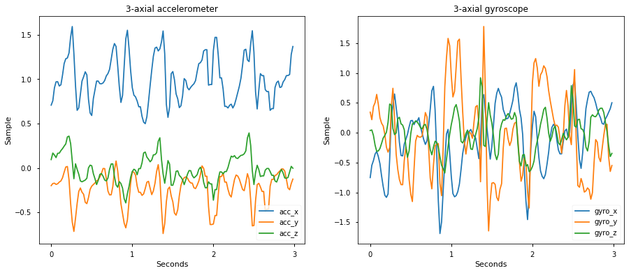
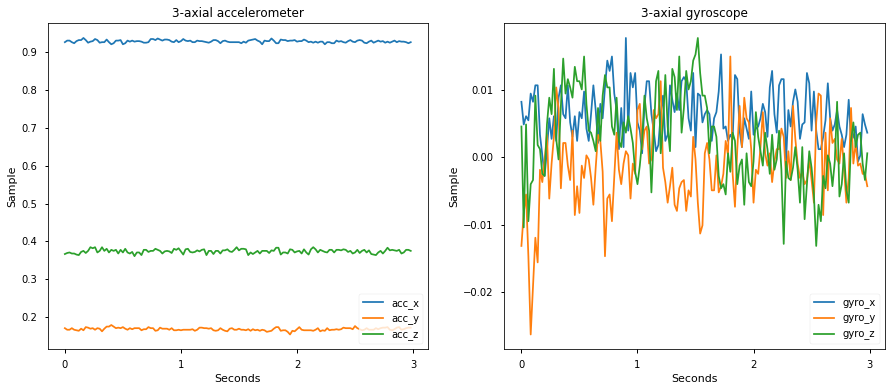

Activity Classifier
Activity classification is the task of identifying a pre-defined set of physical actions using motion-sensory inputs. Such sensors include accelerometers, gyroscopes, thermostats, and more found in most handheld devices today.
Possible applications include counting swimming laps using a watch's accelerometer data, turning on Bluetooth controlled lights when recognizing a certain gesture using gyroscope data from a handheld phone, or creating shortcuts to your favorite phone applications using hand gestures.
The activity classifier in Turi Create creates a deep learning model capable of detecting temporal features in sensor data, lending itself well to the task of activity classification. Before we dive into the model architecture, let's see a working example.
Introductory Example
In this example we create a model to classify physical activities done by users of a handheld phone, using both accelerometer and gyroscope data. We will use data from the HAPT experiment which contains recording sessions of multiple users, each performing certain physical activities.1 The performed activities are walking, climbing up stairs, climbing down stairs, sitting, standing, and laying.
Sensor data can be collected at varying frequencies. In the HAPT dataset, the sensors were sampled at 50Hz each - meaning 50 times per second. However, most applications would want to show outputs to the user at larger intervals. We control the output prediction rate via the prediction_window parameter. For example, if we want to produce a prediction every 5 seconds, and the sensors are sampled at 50Hz - we would set the prediction_window to 250 (5 sec * 50 samples per second).
Below is a 3-seconds example of 'walking' data from a single session in the HAPT dataset:

In contrast, here is a 3-seconds example of 'sitting' data:

The goal of an activity classifier is to distinguish between such samples. Let's see how we can do that with Turi Create. Below is a complete example of loading the HAPT dataset, and creating an activity classifier to distinguish between these examples. The code for getting the data into an SFrame can be found here.
import turicreate as tc
# Load sessions from preprocessed data
data = tc.SFrame('hapt_data.sframe')
# Train/test split by recording sessions
train, test = tc.activity_classifier.util.random_split_by_session(data,
session_id='exp_id',
fraction=0.8)
# Create an activity classifier
model = tc.activity_classifier.create(train, session_id='exp_id', target='activity',
prediction_window=50)
# Evaluate the model and save the results into a dictionary
metrics = model.evaluate(test)
print(metrics['accuracy'])
# Save the model for later use in Turi Create
model.save('hapt.model')
# Export for use in Core ML
model.export_coreml('MyCustomActivityClassifier.mlmodel')Since we have created the model with samples taken at 50Hz and set the prediction_window to 50, we will get one prediction per second. Invoking our newly created model on the above 3-seconds walking example produces the following per-second predictions:
walking_3_sec = data[(data['activity'] == 'walking') & (data['exp_id'] == 1)][1000:1150]
model.predict(walking_3_sec, output_frequency='per_window')+---------------+--------+---------+
| prediction_id | exp_id | class |
+---------------+--------+---------+
| 0 | 1 | walking |
| 1 | 1 | walking |
| 2 | 1 | walking |
+---------------+--------+---------+
[3 rows x 3 columns]We've seen how we can quickly create an activity classifier given recorded sessions of sensor data. To learn more about the activity classifier please read the following sections: